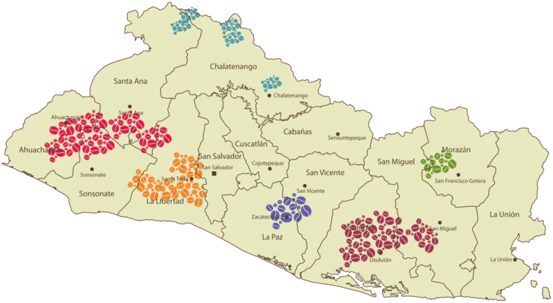
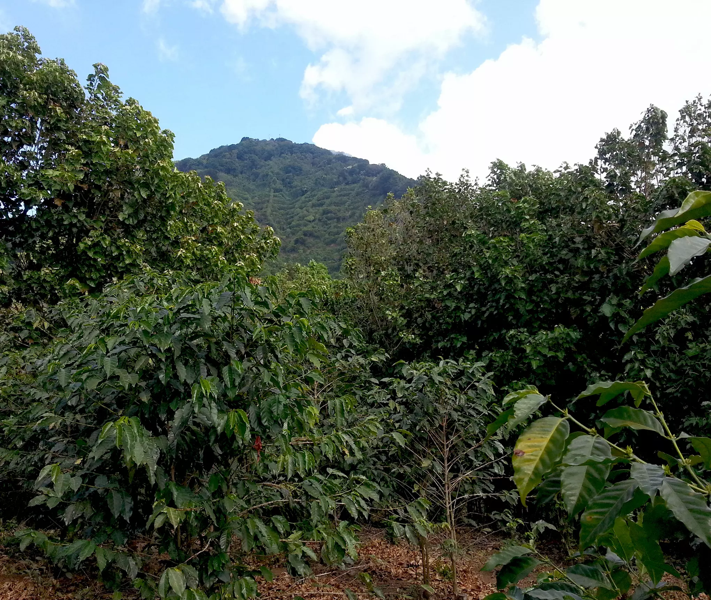

El Salvador Coffee History
The beginnings of coffee in El Salvador was introduced in the 18th century, removing indigo as the countries main export and by the 19th century coffee accounted for 90% of its exports.
Most of these plantations were under the ownership of small land elites who had lots of large scale land. These elites were usually linked to the governance of El Salvador. These leaders were investing in infrastructures like roads that would help the coffee industry. Those without land were not receiving any of this wealth.
In the 1970s El Salvador was the 4th largest producers of coffee. There was an overdependence on coffee for their own economic growth, but this lead to some struggles during the period of the civil war. The aftermath of the war cause the country to have land reform that cause the countries traditional estates get broken up. Now, 95% of the country's producers grow coffee, no person can own more than 605 acres.
Coffee Production Regions
Coffee productions grow mostly across the entire country, that is divided into 7 regions of production plantations. All are different that depend on the altitude and flavor characteritics.
Apaneca-llamatepec
This is the most reowned region in El Salvador with altitudes ranging from 500 to 2,365 meters.
This ares is located in the western region that is near other coffee farms and the famous Santa Ana
volcano.
El Basalmo-Quezaltepec
This was the original home of the Quetzalcotitan civilization, including San Salvador Volcano with
its rich volcanic soild. The name was created from the Salvadoran Balsam (aromatic resin) that is produced, with the
altitudes being 500 to 1,900 meters.
Tecapa-Chinchontepec
This regions average altitude is 500 to 2,000 meter, it is the home to the city San Miguel and Chaparrastique
Volcano (having the highest peak of 2,130 meters). This reagion had the 3rd highest production in the country.
Cacahuatique
This region is right in between San Miguel and Morazan, in the east of the city Barrios. The altitudes average
being between 500 to 1,663 meters. This regions is mostly known for their soil being clay-like, the farmers have to dig
bigger holes to be able to fill them with rich soil to be able to plant their coffee bean trees. This are is 4% of the total coffee
cultivation of this area.
Nahuaterique
This location borders the north of Honduras and the south of the Torola valley. The region is most known for
the land of evergreen forest.
Alotepeque-Metapan
The regions altitudes ranges between 1,000 to 2,000 meters, making the coffee growing is high up. It is located
in the north of El Salvador, known for their coffee being of high quality.
Chinchontepec(San Vicente) Valcano
This mountain range includes La Paz, San Vicente, and Cuscatlan, which is in the center of El Salvador. The San vicente
Volcano has an altitude of 2,130 meters. This is one of the newest coffee production regions, making Bourbon and Pacas the Most
common coffees to be made.
Coffee Exports and Production
The coffee production has been declining ever since 1980s and today it makes for 2% of their total exports. Regardless of this, it is now a specialty coffee origin and has one of the world's most desired variety. The reason why they export so much coffee is because it sells for triple the amount in the international markets than the local market. Coffee prodcution was the principal economic driver in the 1920s and 30s, making it 90% of exports. This changed in the 20th centurty. One of the leading causes for the production to suffer was the civil war. During this the production fell by 19%.
After the war, El Salvador found themselves struggling to get back into the international market with having competition from other countries. This sector continues to struggle now with low international prices, climate change, and the problme of coffee leaf rust. The pandemic affected their farm work availability to continue the harvesting and picking and processing of coffee beans. The government announced that they will implement a program that was going to help renovate plantations and create coffee research insitute.
The Importance
Coffee has an importance in the country, with its history and culture that is relating back to coffee production. Plus, it has a huge impact with their economy, creating jobs, and protection of the environment. El Salvador is the high quality producers of coffee that is exported worldwide. These exports have helped the country with its revenue and the GDP increasing. As mentioned before coffee production helps the environment by having these areas protected and maintained. This secures that the coffee is of good quality and the protection of their land. If these plantations were to dissapear then the forest and nearby forest could be vulnerable and cause them to disapear.